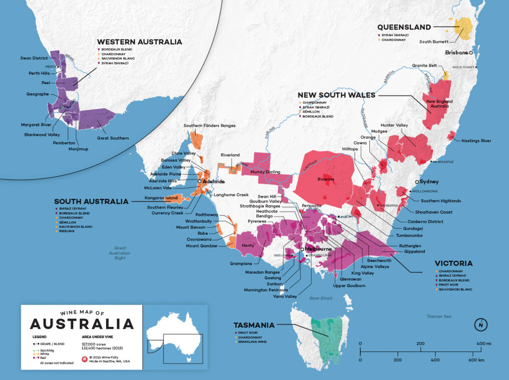

Australia
Top Picks
Australia's three categories to seek out wherever you find them. These grapes and regions define what Australian wine does best.
| Category | What to Look For | Why |
|---|---|---|
| Red Wine | Shiraz from Barossa Valley | Australia's signature grape — bold, plummy, smooth with a hint of pepper spice. Hard to go wrong. |
| White Wine | Chardonnay from Margaret River or Semillon from Hunter Valley | Margaret River Chardonnay is refined and mineral; Hunter Valley Semillon is unique — lean when young, honeyed and complex with age. |
| Sparkling Wine | Sparkling from Tasmania | Tasmania's cool climate produces some of the Southern Hemisphere's finest traditional-method bubbles, often compared to Champagne. |
Australian Wines to Look For
These bottles represent Australia's best across all styles — from world-famous Barossa Shiraz to elegant Tasmanian sparkling and rare fortified tawnies. Worth seeking out at bottle shops or ordering online.
| Wine | Varietal / Region | Notes | Taste | Est. Price |
|---|---|---|---|---|
| Penfolds Bin 28 “Kalimna” Shiraz | Shiraz / Barossa Valley | Classic Barossa Shiraz from one of Australia's most famous producers | Bold, Plum, Spice | ~$35–45 |
| Torbreck “Woodcutter's” Shiraz | Shiraz / Barossa Valley | Modern Barossa icon known for balance and rich fruit | Dark Fruit, Pepper, Smooth | ~$25–30 |
| Vasse Felix Cabernet Sauvignon | Cabernet Sauvignon / Margaret River | Margaret River benchmark with Bordeaux-like structure | Blackcurrant, Cedar, Elegant | ~$45–60 |
| Leeuwin Estate “Prelude” Chardonnay | Chardonnay / Margaret River | Prestigious winery known for refined, elegant Chardonnay | Citrus, Creamy, Mineral | ~$30–40 |
| Grosset Polish Hill Riesling | Riesling / Clare Valley | One of Australia's most respected Rieslings | Lime, Mineral, Crisp | ~$40–50 |
| Tyrrell's Hunter Valley Semillon | Semillon / Hunter Valley | Legendary age-worthy white that evolves beautifully over time | Lemon, Honey, Fresh | ~$25–35 |
| Shaw + Smith Sauvignon Blanc | Sauvignon Blanc / Adelaide Hills | One of Australia's best modern Sauvignon Blanc producers | Citrus, Herbal, Bright | ~$25–30 |
| Jansz Premium Cuvée | Sparkling / Tasmania (Chardonnay–Pinot Noir) | Tasmania's flagship sparkling wine house | Bubbly, Citrus, Toasty | ~$30–35 |
| Arras Brut Elite | Sparkling / Tasmania | Premium traditional-method sparkling often compared to Champagne | Elegant, Brioche, Crisp | ~$55–70 |
| Yalumba Antique Tawny | Fortified / South Australia | Excellent value aged tawny from a historic winery | Caramel, Nutty, Smooth | ~$25–35 |
| Seppeltsfield 10-Year Tawny | Fortified / Barossa Valley | One of Australia's classic fortified producers | Toffee, Fig, Rich | ~$30–40 |
General Info
Wine grapes were first brought to Australia by European settlers in the late 1700s and early 1800s, who transported cuttings from famous regions in France, Spain, and Germany to plant new vineyards. Over time, these grapes adapted well to Australia's sunny climate and diverse landscapes, producing wines known for bright fruit flavors and smooth textures.
Uniquely, South Australia was never affected by the devastating Phylloxera vine louse that destroyed most European vineyards in the late 1800s. Because of this, some vineyards still grow ungrafted vines that are genetically very close to the original European plantings — and are some of the oldest in the world.
Shiraz or Syrah?
Shiraz is the Australian way of saying Syrah — it's the same grape but with an Aussie accent. While the grape is identical, the different names help signal whether the wine leans toward a more Old World, earthy style (Syrah) or a bolder, fruit-driven style (Shiraz). Syrah is the traditional French name, most associated with the Rhône Valley in France.
Shiraz is Australia's signature grape and one of the wines that put the country on the global wine map. Australian Shiraz is known for being bold, smooth, and full of flavor, often showing notes of blackberry, plum, and a hint of peppery spice. Many of the vines in South Australia are also some of the oldest in the world, producing wines with incredible depth and character. Even if you're new to wine, Shiraz is easy to enjoy because it's rich, balanced, and pairs well with a wide variety of foods — from grilled meats to hearty dishes.
Region & Grape Overview
